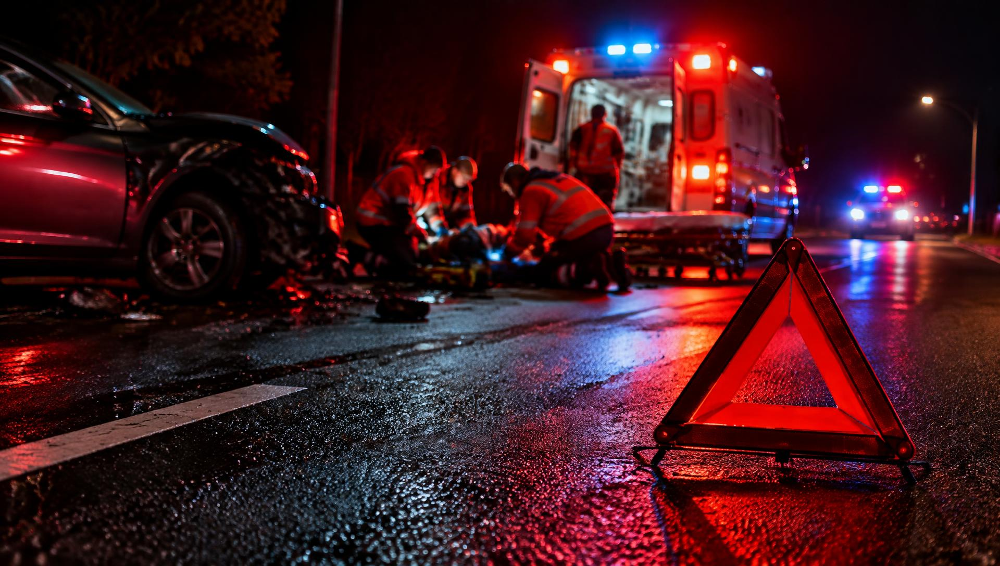
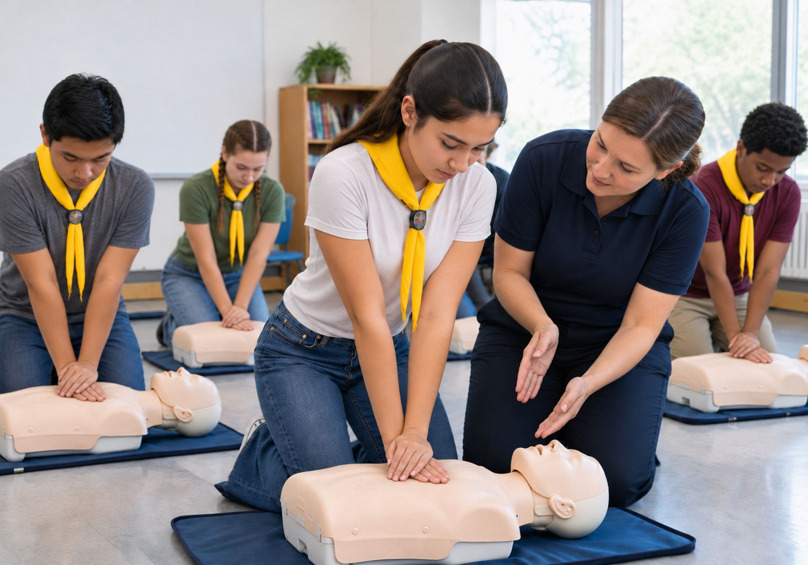
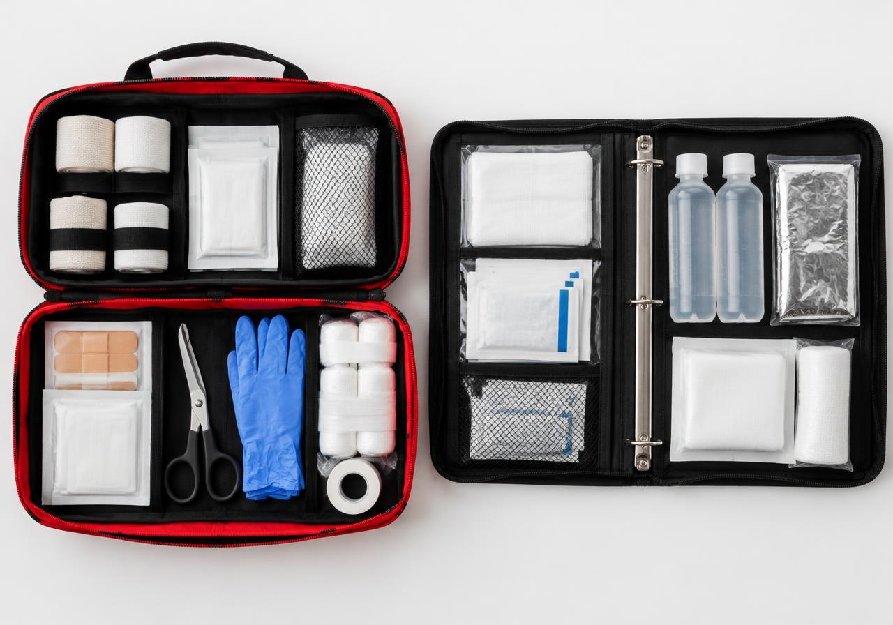

Do local do acidente à sala de aula, da ética ao Código Penal: tudo o que você precisa saber para concluir a especialidade e, mais importante, para salvar vidas.
Antes de tudo
A especialidade avançada é a terceira etapa de uma trilha: básico → intermediário → avançado. Para começar, é obrigatório já ter concluído a especialidade de Primeiros Socorros – intermediário, onde você aprendeu RCP, controle de hemorragias, imobilizações, queimaduras, choque e transporte de feridos.
Revise todo o conteúdo do nível intermediário antes de avançar. O nível avançado parte do princípio de que você já domina as técnicas fundamentais.
Estudar o nível intermediário →Tenha na memória
A ligação é gratuita, inclusive de celulares sem crédito. Fale com calma: o que aconteceu, onde (endereço e ponto de referência), quantas vítimas e como elas estão.
Atendimento médico de urgência
Resgate, vítimas presas, incêndio
Segurança do local e ocorrências
Acidentes em rodovias federais
Acidentes de trânsito
No acidente de trânsito, o maior risco para o socorrista é virar a próxima vítima. Por isso, a sequência correta é: proteger-se, sinalizar, chamar ajuda e só então socorrer.
Protocolo usado pelos serviços de emergência (PHTLS) para o trauma. Avalie na ordem e resolva cada problema antes de seguir:
Somente diante de risco iminente. Use a manobra de Rautek: passe os braços por baixo das axilas da vítima, segure um antebraço dela junto ao peito e apoie a cabeça dela contra o seu corpo, arrastando-a em bloco, mantendo a coluna o mais alinhada possível.
Não tire o capacete. Ele só deve ser removido por profissionais, ou por socorrista treinado quando a vítima não respira e é impossível acessar a via aérea, sempre com duas pessoas estabilizando o pescoço.
A “hora de ouro”
No trauma grave, a vítima tem as melhores chances de sobreviver se receber tratamento definitivo em até 60 minutos. Os primeiros 10 minutos (os “10 minutos de platina”) são onde o socorrista leigo faz mais diferença: sinalizar, chamar o 192 e conter hemorragias.
“Quem salva uma vida, salva o mundo inteiro.”— Provérbio do Talmude

Multiplique o conhecimento
Um dos requisitos é ensinar a especialidade de Primeiros Socorros – básico ou intermediário a um grupo de desbravadores ou alunos. Quanto mais pessoas souberem agir, mais vidas serão salvas.
Dicas para uma boa aula: prepare-se com antecedência, use linguagem simples, mostre na prática, deixe todos treinarem, use histórias reais e termine com um quiz ou simulação.
Conteúdo do básico → Conteúdo do intermediário →| Encontro | Tema | Atividade prática |
|---|---|---|
| 1 | O que é primeiro socorro, segurança da cena, números de emergência | Simular uma ligação para o 192 |
| 2 | Avaliação da vítima, sinais vitais, posição lateral de segurança | Medir pulso e respiração em duplas |
| 3 | Hemorragias, ferimentos e curativos | Montar curativos e bandagens |
| 4 | Queimaduras, fraturas e imobilizações | Tala improvisada com jornal e tipoia |
| 5 | Engasgo (Heimlich) e RCP | Prática em manequim |
| 6 | Revisão e avaliação | Simulação de acidente com “vítimas” maquiadas |
Para a biblioteca do clube
O portfólio é uma pasta organizada com materiais de consulta e estudo, que ficará na biblioteca do clube para que outros desbravadores possam aprender.
Use uma pasta catálogo ou fichário, com divisórias por tema, capa identificada, índice e fontes. Inclua fotos e amostras de materiais em saquinhos plásticos.

Ética e lei no Brasil
No Brasil, prestar socorro não é apenas um gesto de bondade: é um dever legal. Mas a lei também protege quem ajuda de boa-fé, desde que atue dentro do seu limite de conhecimento.
Princípios éticos do socorrista: respeitar a vida e a dignidade da vítima; pedir consentimento quando ela está consciente (o inconsciente tem consentimento presumido); preservar a privacidade (não fotografar nem divulgar); manter sigilo; não discriminar; agir dentro de sua capacitação; e não abandonar a vítima até a chegada de ajuda qualificada.
Código Penal · Art. 135
“Deixar de prestar assistência, quando possível fazê-lo sem risco pessoal, à criança abandonada ou extraviada, ou à pessoa inválida ou ferida, ao desamparo ou em grave e iminente perigo; ou não pedir, nesses casos, o socorro da autoridade pública.”
Pena: detenção de 1 a 6 meses, ou multa; aumentada de metade se resultar lesão grave e triplicada se resultar morte.
Código de Trânsito · Arts. 176, 177 e 304
O condutor envolvido em acidente com vítima deve prestar ou providenciar socorro, sinalizar o local e chamar a polícia. Deixar de socorrer é infração gravíssima e pode configurar crime (art. 304), mesmo se outra pessoa já tiver socorrido. Até quem não está envolvido e deixa de ajudar comete infração (art. 177).
Proteção de quem socorre
Pelo art. 23 do Código Penal (estado de necessidade), quem age para salvar alguém de perigo atual não comete crime. Ligar para o 192/193 já é uma forma de prestar socorro: ninguém é obrigado a se arriscar. O socorrista só responde se agir com dolo, ou com imprudência, negligência ou imperícia graves.
Glossário
Deixar de prestar assistência a quem está ferido ou em perigo, quando é possível fazê-lo sem risco pessoal, ou não pedir ajuda às autoridades. É crime previsto no art. 135 do Código Penal.
Ex.: ver alguém caído na rua, inconsciente, e seguir caminho sem ligar para o 192.
Iniciar o atendimento e interrompê-lo, deixando a vítima sozinha antes da chegada de alguém igualmente ou mais capacitado, sem que ela concorde ou sem passar o caso adiante.
Ex.: começar a conter uma hemorragia e ir embora antes do SAMU chegar.
Falta de cuidado, desatenção ou descaso: deixar de fazer o que deveria ser feito. É uma conduta omissiva.
Ex.: não usar luvas, não sinalizar o local ou não verificar a respiração da vítima.
Falta de conhecimento técnico ou habilidade para realizar um procedimento. É agir sem saber como fazer.
Ex.: tentar colocar no lugar um osso fraturado ou fazer um torniquete sem treinamento.
Agir de forma precipitada, sem cautela, assumindo riscos desnecessários. É uma conduta comissiva (fazer algo arriscado).
Ex.: retirar a vítima do carro às pressas sem necessidade, ou atravessar a pista sem olhar.
Você sabia?
Fundação do Comitê Internacional da Cruz Vermelha, em Genebra, inspirado por Henry Dunant após ver feridos abandonados na Batalha de Solferino.
Compressões por minuto é o ritmo ideal da RCP: o mesmo da música “Stayin’ Alive”, dos Bee Gees.
A RCP imediata feita por um leigo pode dobrar ou triplicar as chances de sobrevivência em uma parada cardíaca.
Pessoas morrem por ano em acidentes de trânsito no Brasil, segundo dados do Ministério da Saúde.
Ano de criação do SAMU 192 no Brasil, inspirado no modelo francês de atendimento pré-hospitalar.
Tempo aproximado em que o cérebro sem oxigênio começa a sofrer lesões irreversíveis. Cada segundo conta.